Operating Documentation
Direction 5181178-800, Rev# 16
BrightSpeed Select Service Methods Gen
Module Version 1.0, Version Date 4/13/12
Operating Documentation |
| Last Revised on: | May 10, 2011 |
This module contains the following subsections:
Section 1 - Overview (NIO16 Console)
Section 2 - Host computer z800
Section 3 - GPU Card
Section 4 - Positioner Interface
Section 5 - Peripheral Media Tower
Section 6 - Cooling System
Section 7 - Service and Diagnostics
Section 8 - Console Block Diagrams
The NIO16 Console consists of the following components.
Host Computer - contains the System / Image Data Disks, KDIP board and two scan data disks.
GPU: a graphic card is used for ASIR or Fluoro Option.
GSCB - GSCB shall provide all functions on SCIM and ICOM, and meet new I/O requirements.
Cooling Package, including:
Fans
Air Filter
For NIO console, Host computer receives raw data from the Data Acquisition System (DAS) through an on-board Data Interface processor (KDIP) card, and stores that data in the Scan Data Disks located in the Host computer. The raw data is then delivered from the scan data disks in the Host PC to the IG processes in Host PC. The IG processes then create images (If GPU card is installed, GPU card will be utilized during BP reconstruction). The images generated are saved in image disk in host computer.
The host computer for the NIO console will be an off-the-shelf, Linux-based system.
Key performance specification of the NIO console are:
Recon times: 6 fps with software BP, 16 fps with GPU BP
Image Matrix: < 512 x 512 pixels
Host Computer in NIO console is the central operation controller of the CT system.
Host Computer controls all the NIO console functions and data flow, including actual image generation. Software in Host computer sends the reconstruction request, recognize the recon mode, timing, parameters, and data, and be able to generate the image set. The raw data is first restored from the disks. The Host Computer then creates an image set and requests image generation to the IG process in Host Computer. While most of the software components (e.g. Recon_Control, Data_Restore, Image_Buffer, and Data_Acq) reside on Host Computer, the components related to image generation also reside on Host Computer.
Main data flow of the Host Computer is described as follows:
Receive raw data from the Gantry
Store the raw data to the scan data disks
Restore the raw data from the scan data disks and transfer to buffer memory in Host Computer.
Take multi-image streams from Image generation processes ran on Host computer, and be saved on image disk in Host Computer.
The Host Computer is comprised of the following:
HP computer: a computer using a high-performance PC workstation
System disk: the OS and Applications software are stored on this disk
Image disk: Images are stored on this disk
Scan data disks: the raw data are stored on four scan data disks.
KDIP card: the DAS Interface Processor card
Gigabit Ethernet (GbE) cards
DVD-ROM drive: will be used for software installation and stand-alone use
Graphics board: connect to two LCD monitors
GPU: an optional graphic card is used for 16 FPS image reconstruction, ASIR or Fluoro option.
The Host Computer will take advantage of a standard, off-the-shelf motherboard, using dual microprocessors to increase processing density. The Host Computer will use very high performance general-purpose processors, memory, and a server motherboard with GB Ethernet and SAS port(s), and power supply.
Dual Processors: Intel ® Xeon™ Quad Core processors or successor
Memory: 12GB FBD DDR3-1333 REG ECC DIMM
Onboard SAS Devices: four (4) SAS ports reside on mother board
Seven (7) PCI/PCI-X/PCI-E expansion slots.
SLOT 1PCI-E: KDIP card
SLOT 2 PCI-E: graphics card
SLOT 3 PCI-E: NIC card
SLOT 4 PCI-E: Not used.
SLOT 5 PCI-E: GPU card
SLOT 6 PCI: Not used.
SLOT 7 PCI-E: Not used.
The following picture show the Z800 panel and component ID.
Illustration 1: Z800 Front Panel
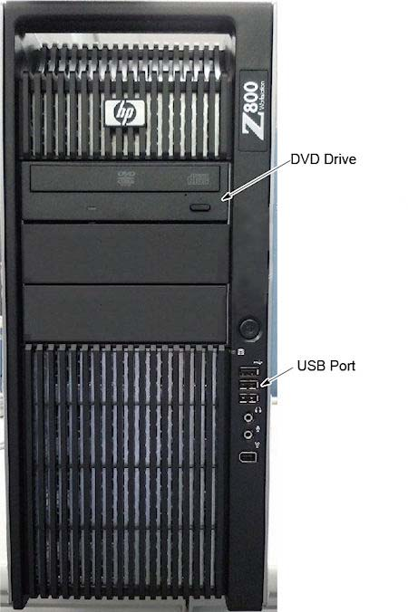
Illustration 2: Z800 Rear Panel
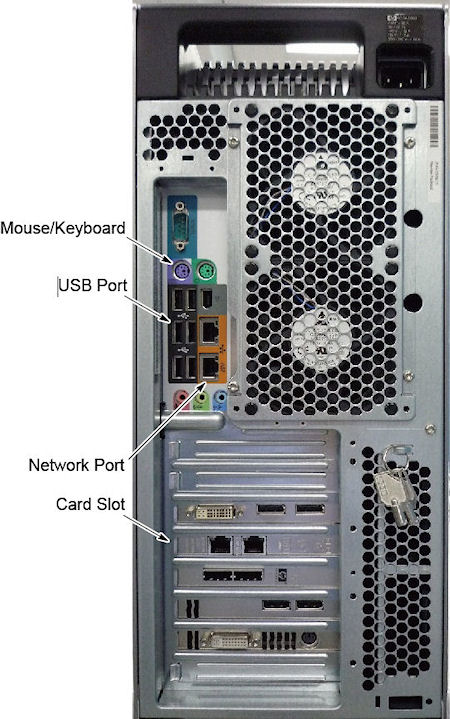
Illustration 3: Mother Board
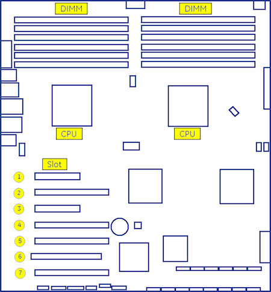
Illustration 4: Z800 Left Side View
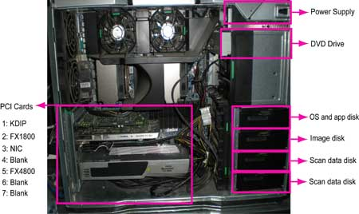
There are four (4) SAS hard disk drives (300GB) for scan data connected to Host computer. Below are the definition of these four hard disk drives:
Below are key performance of the scan data drives.
Minimum rotation rate of 15,000 RPM
SAS interface
Formated capacity of 300 Gigabytes
3.5” full height
This PCIe KDIP card supports almost the same functionality as the current DIP in that it converts the optical signal received from the Gantry into electrical raw data and writes that data to one of the double buffers on the card. When the received data count reaches a predetermined value it will switch over to the other buffer. The Host Computer then receives this data via the PCI bus. This card supports 64bit, 66MHz, PCI bus interface with an FPGA, and should be able to support 833MB/sec data rate optical fiber interface.
TGPU board in gantry is connected to the Host computer via Gigabit Ethernet (GbE) card connected to one of the PCI-e slots.
Gigabit Ethernet (GbE) card:
Dual Gigabit Ethernet ports
10Base-T, 100Base-TX, 1000Base-TX IEEE802.3ab compatible
64bit, 66MHz (or higher) PCI-e interface
Low profile form factor
Gigabit Ethernet card ports definition is described below:
| Name | Z800 |
| Switch Hub | ETH3 |
| HSP | ETH2 |
| Gantry TGPU | ETH1 |
| Reserved | ETH0 |
The USB ports on Host Computer are used to connect the peripheral devices. The definition of USB ports is listed as below:
Table 1: USB Ports
| Physical Port | Definition |
| 1 | Keyboard |
| 2 | Mouse |
| 3 | Trackball |
| 4 | BarCode Reader |
| 5 | EXT USB |
| 6 | DVD-RW |
| 7 (Front) | Service Key |
The DVD-ROM drive is used for software installation, system diagnostics, and to support stand-alone operation of the Host computer.
This PCI card accelerates the back-projection process of the NIO console and is plugged into PCI-e slot in the Host Computer.
This parallel beam back-projector provides the NIO console the ability to off-load the back-projection application from general-purpose processors to fully programmable hardware. This option dramatically increases the reconstruction performance per cost ratio.
Following are the high-level CTQs for the GPU card:
Perform parallel beam back-projection at >16fps
PCI-e compatible
Reconstruct any image matrix size up to 524,288 32bit pixels
Global Scan Control Box (GSCB) together with an off-the-shelf keyboard shall be the user interface in CT system. GSCB compatible with current SCIM (Scan Control Intercom Module) and ICOM (Console Intercom Prescribed Tilt Hub). GSCB shall provide all functions on SCIM and ICOM, meet new I/O requirements (See Illustration 5 for GSCB functions.)
Illustration 5: Global Scan Control Box (GSCB)
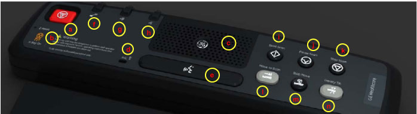
| a | Emergency Stop Button |
| b | Exposure Indicator |
| c | Speaker |
| d | Microphone |
| e | Talk Button |
| f | Autovoice Volume - Operator voice to patient |
| g | Volume Control - Autovoice to gantry |
| h | Volume Control - Patient voice to operator |
| i | Start Scan Button |
| j | Pause Scan Button |
| k | Stop Scan Button |
| l | Move to Scan Button |
| m | Stop Move Button |
| n | Prescribed Tilt Button |
The GSCB is a component of the CT system. The following diagram shows the overall structure. The GSCB interfaced to the host PC and TGP board of the Gantry subsystem. The Host workstation is the control central of the whole CT system, The TGP is the main controller of the Table, Gantry and PDU. The GSCB is a user interface to the technician as the front end of the scan control loop. (See Illustration 6.
Illustration 6: GSCB Block Diagram
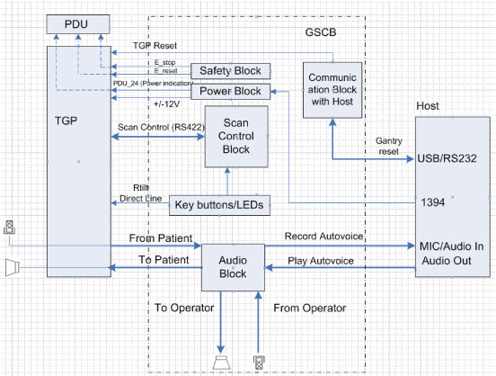
The Intercom block enables communication between the console operator and the patient on the table. The communication direction through the Intercom can be switched by depressing the TALK button on the SCIM keyboard. The operator can speak to the patient by depressing the TALK button (ON). When the TALK button is released (OFF) the operator can then listen to the patient.
When Auto-voice is playing, the operator can listen through the Console speaker on the Auto-voice R channel while the TALK button is released (OFF). At the same time the patient can listen through the Table speaker on the Auto-voice L channel.
If the operator depresses the TALK button (ON) while Auto-voice is playing, the Intercom will disable the Auto-voice sound and will switch the sound source to the Console microphone output. The Console microphone output is amplified and routed to the Host computer's audio input for the Auto-voice recording. The Auto voice recording will be managed by the host computer's software. It will be up to the software to start and stop recording the sound.
The Prescribed Tilt circuit block will detect the status of the TILT push button in the SCIM keyboard as it is pressed or released (NO - Normal Open; NC - Normal Closed respectively) by the use of two independent paths. An invert logic signal condition (XOR) in between these two paths is used to determine the tilt condition. The pulse width of both signals shall be the same when the push button is pressed. Once the signals are received, the dual signal (redundant path) will be transmitted to the TGP board so than a single point of failure will not cause tilt motion.
The Prescribed Tilt circuit performance requirements are specified in the following:
One push button switch double-pole double-throw. The button has six contacts. Contacts 1-3 are used for primary (Hardware) path. Contacts 4-6 are used for secondary (Firmware). See Illustration 7.
Illustration 7: Prescribed Tilt Requirements
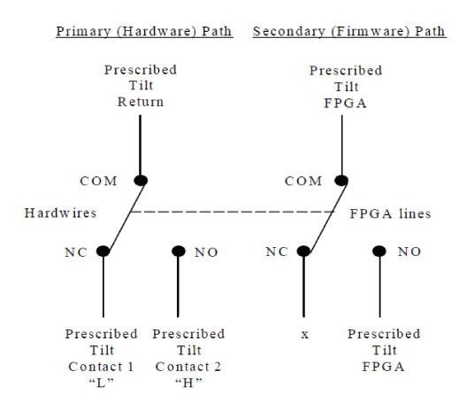
The Prescribed Tilt block detects the condition of the DPDT button in the SCIM keyboard (either press or release) by using two independent paths. These two paths have an inverse logic condition between them and both signals must remain constant for the same period of time while the button is pressed.
No single wire can cause Tilt motion. If one of two wires fails, the circuit will not cause tilt.
The circuit receives dual signals and generates two independent differential signals that are sent to the TGP board. The output remains active as long as the button is pressed.
The defined Voltage level of the Prescribed Tilt signal is no greater than 5V.
The Reset block will receive and detect the serial break command from the Host computer serial port expander (RS-232), and then generate another pulse, which will be sent to the TGP board in the Gantry. Its performance requirements are illustrated below:
The Serial port expander interface sends a minimum RS-232 serial break command of 4mA and 8.1V in order to generate the Gantry Reset signal.
The Gantry Reset circuit responds to any pulse with a width longer than 200ms and will not respond to any pulse with a width less than 150ms.
Once the serial break command has been detected the output of the Gantry Reset circuit will be differential, an active high pulse signal, from 0VDC to +5VDC, with a width no less than 100ms.
The DVD peripheral Media Tower includes one USB interface DVD-RW drive on the NIO Console. This Peripheral Tower is interfaced to the Host Computer using USB 2.0, instead of the SCSI Bus as on past GOCs. The following block diagram shows this interface and the IDE to USB Bridge adapters needed to connect the more commercially available DVD-R/RW Optical Drives.
Illustration 8: DVD Peripheral Media Tower
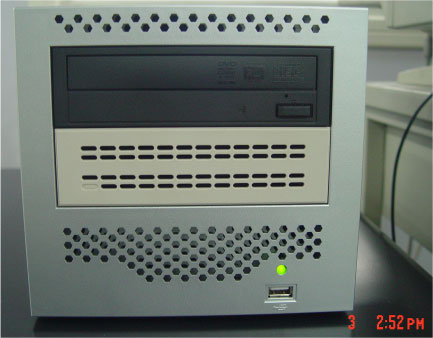
The DVD-R/RW drive is an optical storage device used for data store and data interchange (i.e. transfer of data to other systems) and for archiving data (PET only). DVD-R/RW media storage capacity is 4.7GB and is connected to the Host Computer through a USB 2.0 interface. It also supports CD-R media.
Illustration 9: DVD Peripheral Media Tower Block Diagram
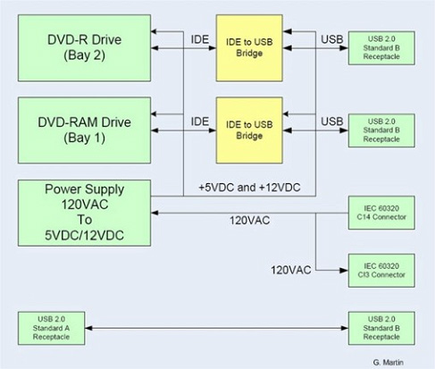
A fan is installed in AC Box for cooling, GSCB power supply and other electronic parts in the box, located upper portion of NIO. And the cooling of Host PC is done by built-in-fans. The air flow to the Host PC fans is conducted by duct of Rear cover. Therefore the rear cover must be closed when Host PC power is on as much as possible.
Air filter is located to both sides and front covers. Periodical cleaning is required.
Illustration 10: Rear Cover
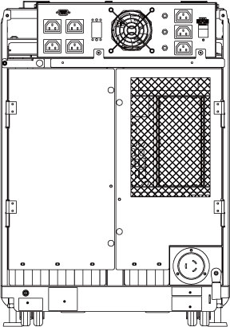
Illustration 11: Air Filter
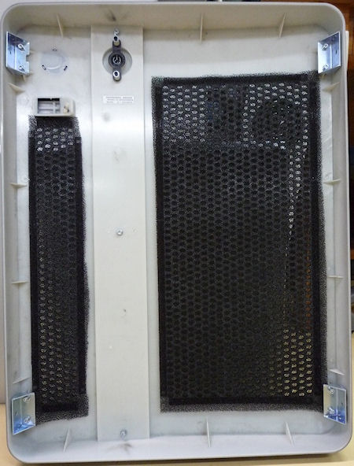
The NIO console supports two types of diagnostic, power-on test and offline test. The power-on test is a subset of offline test. This test sweeps devices condition and checks the motherboard at system power-on after OS booted. The offline test checks each device condition, interface, and environment more strictly.
NIO console supports some kind of diagnostic tools.
Host Computer diagnostics
DIP diagnostic
Scan Data Disk diagnostic
Network / connectivity test
GPU Diagnostics
Peripheral Media Tower Diagnostic
GSCB / Keyboard Function test
Assemblies are assigned as FRUs based on the likelihood of need for replacement and fixed-right- first-time (FRFT). The following is a breakdown of NIO Console FRUs:
Host Computer
KDIP Board
Hard disk drive
GPU card
Graphic card
Ethernet card
DVD Drive
Host Power Supply
AC outlet box
Switch Hub
GSCB
Peripheral Media Tower
Power Switch Assy
Fan Assy
Data Flow Dictionary
Gantry -> KDIP: Serial data receive from a fiber optic interface
KDIP -> Hard Disk: Scan Data Store
Hard Disk -> Recon Control: Offset Data
Hard Disk -> Data Restore: View Data
Recon Control -> IG process on host: Calibration Data, offset vector, tables, parameters
Data Restore -> IG process on host: view data transfer between software processes within host computer.
IG process -> Reconstruct images with the offset data and view data received.
IG process -> Image Buffer Created, and stored into image HDD (DB): Pixel image data and small header are transferred from the IG process in host or in optional IG computer to image buffer create process in Host.
Click on the PDF icon below, for a PDF version of the NIO console Interconnect Diagram.
Media File 1: NIO Console Interconnect Diagram